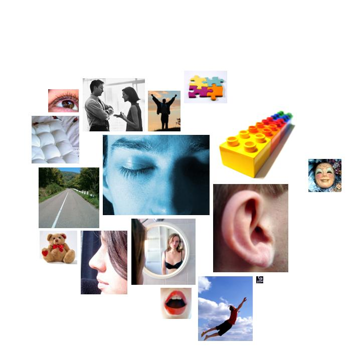

schwarz.txt
  consciousness_alteration
consciousness_alteration dream, dream, dreams, dreams, dreams, dream, dream, dream
 concreteness
concreteness square, over, place, long, long, straight, ahead, out, off, near, back, out, longer, place, here, open, here, off, back, open, where, out, here, overtaking, overtaking, ahead, ahead, ahead, ahead, ahead, over, where, overseas, back, insidious, behind, out, out, front, square, here, background, out, out, back, alongside, at, back, back, back, back, back, back, here, here, here, here, here, back
 sound
sound heard, sounded, heard, listening, sounded, listening, hearts, heart, hear, hearts, heart
 narcissism
narcissism hand, shoulders, hands, eyes, eye, hearts, china, heart, corps, hearts, leg, shoulder, leg, heart
 voyage
voyage immigrant's, traveled, ship, immigrants, immigrant, immigrants
 descent
descent fellow, fellow, fellow, fellow, fellow, fellow
 social_behavior
social_behavior thank, greeting, speaking, called, called, speak, tell, generous, accepting, talk, told, socialist, teacher, talk, spoke, saying, socialism, speak, talking, speak, said, said, said, encourage, speak, agree, say, tell, treated, educational, tell, say, said, say, says, visited, visited, visited, tell, told, said, teach, aids, helped, election, call, say, say, teachers, tell, commitment, visited, met, tell, asked, said, said, said, said, gift, protect, say, thank
 odor
odor breath
 soft
soft gentlemen, gentlemen, gentlemen
 abstraction
abstraction know, true, think, know, why, why, why, believe, belief, knew, possible, know, believe, learned, truly, difference, difference, difference, true, believe, why, believe, why, believe, why, believe, beliefs, believe, know, believe, believe, believe, knows, believe, believe, believe, believe, may, believe, believe, believe, mistake, fact, think, why, knows, reason, them, knows, reason, know, determination, believe, believe, them, them, think, know, know, believe, idea, why
 glory
glory proud, proud, proud, proud, hero, heroes, proud, admire, great, admire, victory, great, extraordinary, great, heroic, great
 affection
affection like, welcoming, love, love, like, friend, like, like, friend, friend, welcome, like, like
 positive_affect
positive_affect smiled, celebrated, grinned
 orality
orality spite, spite, stomach
 vision
vision saw, saw, look, look, see, saw, watching, watching, lamp, lighting, see, light, see, seen
 chaos
chaos chances
thank, greeting, speaking, called, called, speak, tell, generous, accepting, talk, told, socialist, teacher, talk, spoke, saying, socialism, speak, talking, speak, said, said, said, encourage, speak, agree, say, tell, treated, educational, tell, say, said, say, says, visited, visited, visited, tell, told, said, teach, aids, helped, election, call, say, say, teachers, tell, commitment, visited, met, tell, asked, said, said, said, said, gift, protect, say, thank